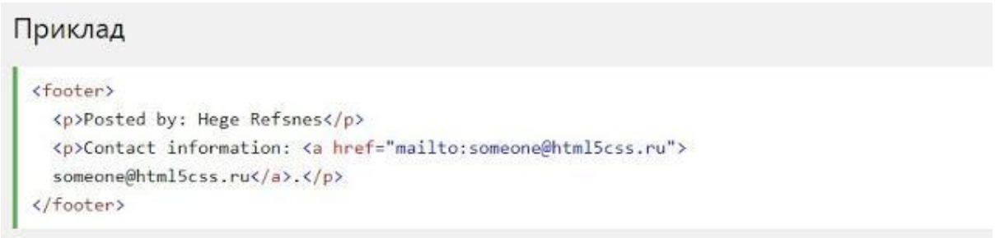

Підтримка браузерів

Семантичні елементи HTML5 підтримуються у всіх сучасних браузерах
Крім того, ви можете "навчити" старих браузерів, як обробляти "невідомі
елементи".
Прочитайте про це в підтримці браузера HTML5.
Семантичний елемент чітко описує його значення як для браузера, так і
для розробника.
Приклади не семантичних елементів:
<div> і <span>- нічого не говорить
про його вміст.
Приклади семантичних елементів: <form>, <table> і
<article>- чітко
визначає його зміст.
Семантичні елементи HTML5 підтримуються у всіх сучасних браузерах
Крім того, ви можете "навчити" старих браузерів, як обробляти "невідомі
елементи".
Прочитайте про це в підтримці браузера HTML5.
HTML5 пропонує нові семантичні елементи для визначення різних частин
веб-сторінки:
Елемент <section> визначає розділ в документі.
Згідно з документацією в3к'с HTML5: "розділ представляє собою
тематичну угруповання контенту, зазвичай з
заголовком".
Домашня сторінка зазвичай може бути розділена на розділи для
ознайомлення, змісту і контактної
інформації.

Елемент <article> визначає незалежний, автономний вміст.
Стаття повинна мати сенс самостійно, і вона повинна мати можливість
читати його незалежно від іншої
частини веб-сайту.
Приклади того, де можна використовувати елемент <article>

Елемент <header>задає заголовок для документа або розділу
Елемент <header> повинен використовуватися в якості контейнера для
вступного змісту.
В одному документі може бути кілька елементів <header> .
наступному прикладі визначається
заголовок для статті:

Елемент <footer> вказує нижній колонтитул для документа або розділу.
Нижній колонтитул зазвичай містить автора документа, інформацію про
авторське право, посилання на умови
використання, контактні дані і т.д.
В одному документі може бути кілька елементів <footer>.
День Відкритих Дверей
Beetroot Academy
Turn on some music to relax ❤